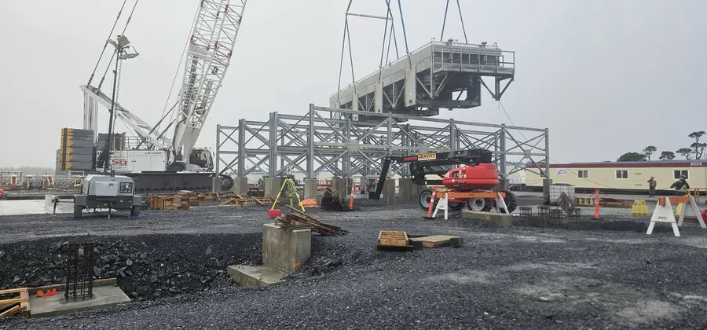
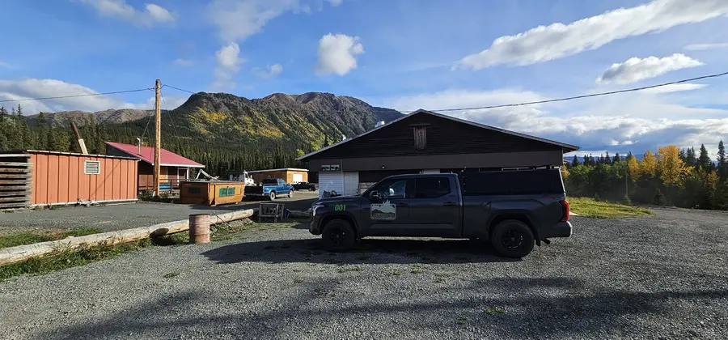

Careers
Work where the survey happens.
Aurora Surveys delivers construction surveying, geomatics and reality capture from Downtown Vancouver to the northern tip of Baffin Island. If you want to do that work, we would like to hear from you.
Life at Aurora
Fieldwork is the job. Everything else supports it.
Our teams work on construction sites, industrial plants, mine sites and remote routes, with the instruments and methods the work calls for. Dedicated project teams stay with a job from mobilization to final deliverables, and the people on them are part of how the work gets done.
The photographs below come from Aurora’s own fieldwork.





Why work with Aurora
What the work is like.
Real fieldwork, in real places
Aurora’s work runs from Downtown Vancouver to the northern tip of Baffin Island: coastal mills, mine sites, construction projects and remote routes.
Field to finish
Field supervision that bridges raw survey data and project execution, so you see how the measurement turns into the build.
Current instruments and methods
Proven surveying methods alongside UAV LiDAR and photogrammetry, SLAM and terrestrial laser scanning.
Safety as a daily practice
Safety is embedded in every field procedure, daily briefing and project plan.
Community and mentorship
Aurora is committed to First Nations partnerships: local community members, customized training and ongoing mentorship within our project teams.
Work that changes shape
Each project here started as one scope and became another. The work rewards people who can adapt in the field.
Current openings
No openings are listed here.
We do not publish specific positions on this page. If you would like to work with Aurora, introduce yourself below and tell us about the work you are interested in. Your enquiry goes to our team by email.
General careers enquiry